Тогда и сейчас: Как поменялся компьютер
Персональный компьютер прямо или косвенно является частью нашей жизни уже почти пять десятилетий, но самые значительные изменения произошли за последние тридцать лет.
За это время ПК полностью изменился по внешнему виду, возможностям и использованию. Если некоторые аспекты практически не изменились, то другие стали неузнаваемыми по сравнению с машинами прошлого.
И конечно, изменения неизбежны, когда на кону стоят миллиарды долларов прибыли. Однако мало кто мог предсказать, как именно будут развиваться эти события.
Мы рассмотрим метаморфозу ПК от неуклюжих громоздких бежевых коробок до удивительного множества мощных, красочных и поразительных компьютеров
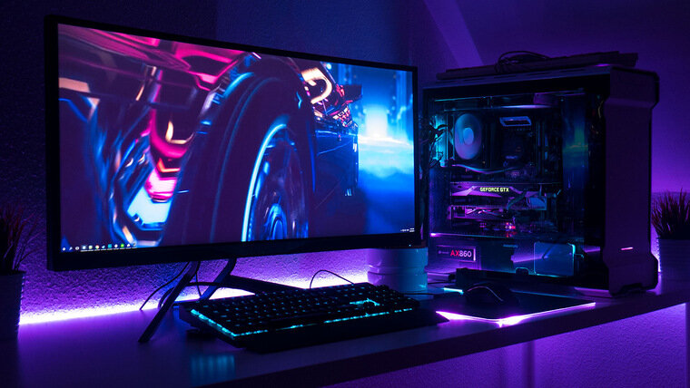Получение большего с помощью Муре: экспоненциальный рост
Когда Гордон Мур, директор по исследованиям и разработкам компании Fairchild Semiconductor, в 1965 году писал о тенденциях в производстве микросхем, он предположил, что в течение десятилетия средний процессор может содержать более 60 000 компонентов. Его прогноз не только оказался верным, но и стал точной моделью на многие будущие десятилетия.
К 1993 году ПК премиум-класса мог похвастаться чипами, которые невозможно было себе представить тридцатью годами ранее. Pentium от Intel содержал поразительные 3,1 миллиона транзисторов в чипе размером всего в половину квадратного дюйма (294 мм2).
Его вычислительная мощность была столь же впечатляющей: он выполнял более 100 миллионов инструкций в секунду благодаря продуманной конструкции и относительно высокой тактовой частоте 60 МГц.
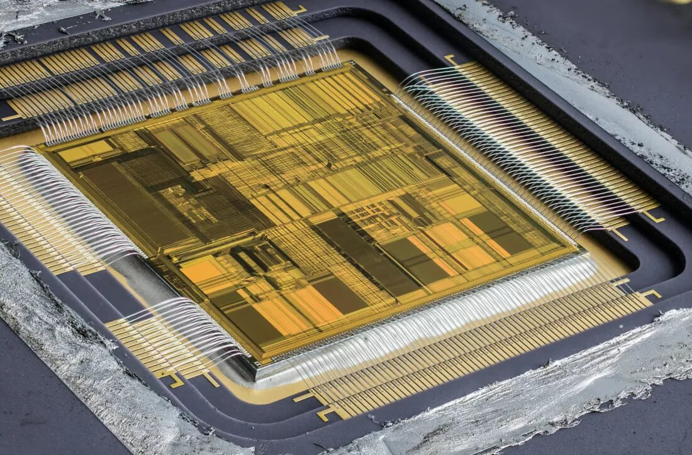К середине 1970-х годов закон Мура продолжал действовать благодаря постоянному технологическому прогрессу в разработке и производстве полупроводниковых интегральных схем. Сложно понять, насколько более мощными стали чипы, прежде всего потому, что метрики, использовавшиеся в прошлом, сегодня не особенно актуальны.
При правильных условиях Pentium мог обрабатывать две задачи за тактовый цикл, но они должны были исходить из одного потока. Аналогичный процессор сегодня, если бы он тестировался таким же образом, дал бы результаты от 300 000 до 800 000 задач в секунду.
Если бы это было связано исключительно с тактовой частотой, то средний настольный ПК был бы оснащен процессорами с частотой 400 ГГц. Однако, поскольку они обычно работают в диапазоне от 4 до 5,5 ГГц, очевидно, что здесь играет роль еще один фактор.
В основном это улучшение связано с тем, что современный процессор может работать с несколькими потоками одновременно. Несмотря на это, многоядерные чипы по-прежнему выполняют лишь несколько инструкций за тактовый цикл. Реальный прирост производительности гораздо выше, в основном за счет улучшения других областей вычислительных возможностей ПК, а именно памяти.
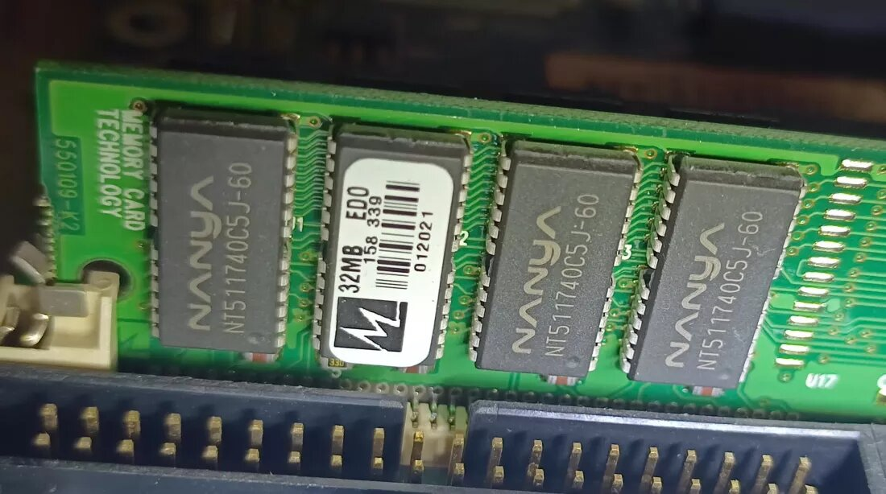Тридцать лет назад оснащение нового ПК более чем 8 МБ оперативной памяти Fast Page Mode (FPM) или Extended Data Out (EDO) DRAM обошлось бы в целое состояние. Скорость практически не упоминалась, поскольку она была незначительным фактором по сравнению с объемом доступной памяти.
Сегодня даже базовые ноутбуки оснащаются оперативной памятью, объем которой в 1000 раз больше, чем у их далеких предшественников, а скорость доступа к данным значительно выше.
Если FPM DRAM едва достигала 18 миллионов операций в секунду (MT/s), то ПК, оснащенный DDR4-2400 (т.е. 2400 MT/s), по сегодняшним меркам считался бы медленным.
Способность делать полупроводниковые компоненты все меньше и меньше также привела к тому, что современные процессоры оснащаются огромными объемами внутренней памяти, называемой кэш-памятью, которая работает на еще более высоких скоростях. Дизайн Intel P5 мог похвастаться 8 кБ для хранения инструкций и еще 8 кБ для данных, а также до 256 кБ микросхем SRAM, припаянных к материнской плате.
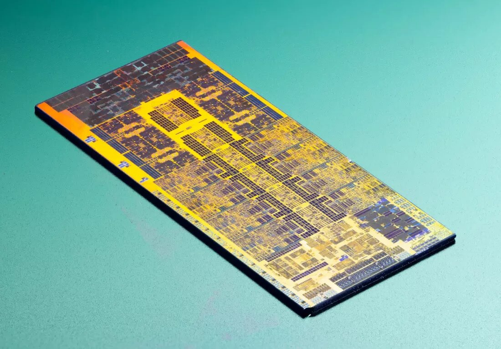Недавний Core i9-13900K (вверху) на первый взгляд может показаться не слишком большим улучшением. Его производительные ядра имеют 32 кб и 48 кб соответственно, в то время как ядра E могут похвастаться 64 кб и 32 кб. Однако они поддерживаются дополнительными 2 МБ кэш-памяти и еще 36 МБ, распределенными между всеми ядрами, и все это расположено глубоко в самом процессоре.
Существует множество других усовершенствований, таких как улучшенные предсказатели ветвлений, но, возможно, самым значительным показателем того, насколько улучшились процессоры с начала 1990-х годов, являются мобильные или портативные устройства.
В ноутбуках того периода использовались процессоры, которые обычно были низковольтными и низкоразрядными версиями настольных моделей, в то время как карманные компьютеры PDA использовали 8-битные процессоры предыдущего десятилетия.
Сегодня можно приобрести часы с процессорами мощнее, чем у оригинального Pentium. Например, часы Galaxy Watch 5 от Samsung оснащены двухъядерным процессором Arm Cortex-A55 с частотой 1,18 ГГц - чипом, который может выполнять инструкции в 20-100 раз быстрее, чем Pentium.
Конечно, наши ожидания от этих устройств сегодня значительно выше (просмотр Интернета, потоковое видео, обработка изображений, игры и так далее), что делает прямое сравнение несколько несправедливым, поскольку тогда у портативных ПК просто не было вспомогательных технологий для выполнения этих задач.
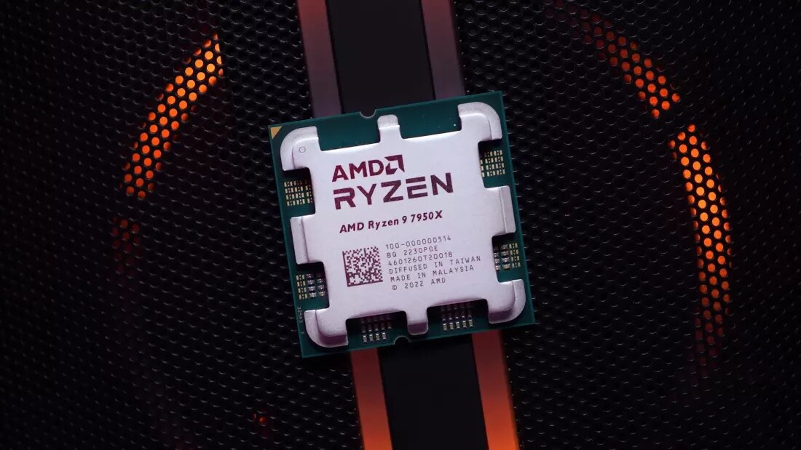Во многих отношениях современный центральный процессор слишком мощный для большинства сценариев использования. Несмотря на то, что компании AMD и Intel вкладывают миллиарды долларов в исследования и разработки, последующие поколения чипов каждый раз демонстрируют лишь незначительные улучшения.
Даже в сфере графических ускорителей 3D (GPU), которых практически не было на потребительском рынке в 1993 году, наблюдаются признаки уменьшающегося прогресса.
Тридцать лет назад процессоры никогда не были достаточно быстрыми. Теперь, чтобы довести их до предела, требуются специализированные приложения.
Всё для народа: Программное обеспечение и простота использования
Хотя современные ПК намного мощнее, чем компьютеры 90-х годов, наши возможности по их использованию изменились до неузнаваемости. Одним из самых значительных достижений в области вычислительной техники стало появление графического интерфейса пользователя. Вместо того чтобы продираться сквозь бесконечные строки команд, можно было добиться тех же результатов, просто взаимодействуя с пиктограммами, логично спроектированными для точного представления файлов, папок и программ.
Windows 3.0 (1990) и Windows 95 (1995) от Microsoft, а также System 7 (1991) от Apple сыграли важную роль в том, чтобы сделать ПК более удобными для пользователя. В результате компьютеры стали более популярны среди обычных людей, поскольку требовалось меньше технических знаний и обучения. Тем не менее, домашние компьютеры по-прежнему были сложны в управлении, особенно при попытке заставить периферийные устройства и карты расширения работать должным образом.
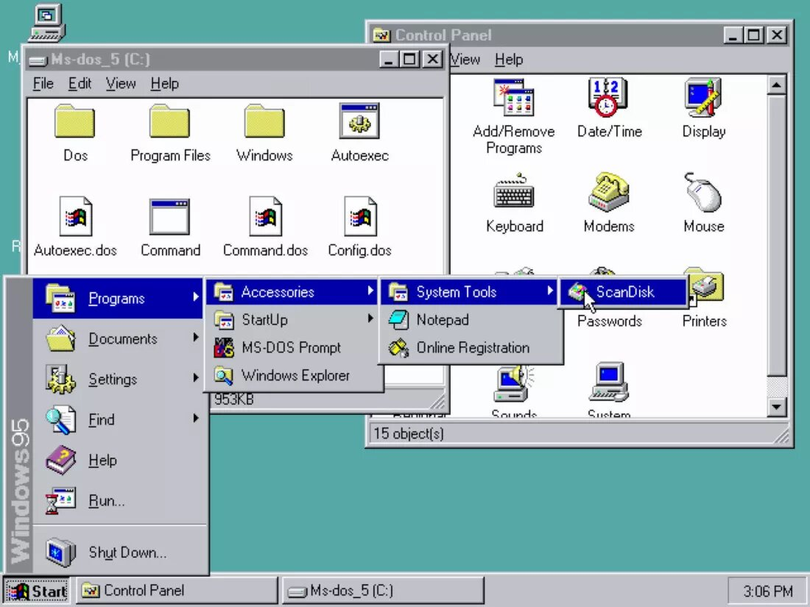Благодаря повышению вычислительной мощности и появлению универсальных стандартов, эти трудности постепенно уступили место тому, что обычно называют "подключи и работай" - возможности подключить устройство к компьютеру и позволить операционной системе выполнить все настройки и конфигурацию.
Системы подключения, такие как USB (1996) и PCI Express (2003), расширили это удобство до такой степени, что от пользователя требуется только нажать кнопку "OK" на несколько подсказок.
Стандарты беспроводной связи, такие как Bluetooth и Wi-Fi, также сыграли значительную роль в продвижении ПК в массы. Интеграция этих стандартов в операционные системы значительно улучшила пользовательский опыт. Настройка и подключение к сети или конкретному устройству, которые когда-то были классическими примерами компьютерных проблем, теперь выполняются в несколько кликов.
Когда-то материнские платы были украшены крошечными DIP-переключателями, которые необходимо было правильно настроить в соответствии с размещенными в них компонентами. Теперь нужно просто вставить деталь, а все остальные настройки выполнит программное обеспечение. Хотя многим пользователям ПК удобно устанавливать драйверы самостоятельно, операционные системы, такие как Windows и macOS, могут с легкостью сделать это за вас.
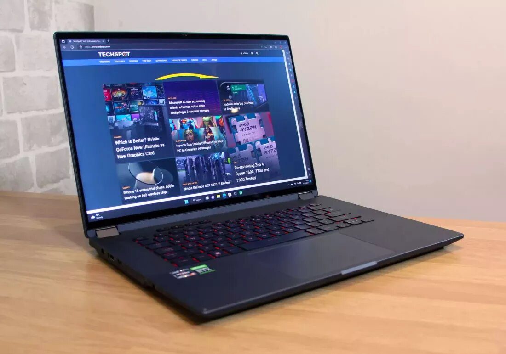Неизбежно увеличился размер базового программного обеспечения, необходимого для работы компьютера. Если для Windows 95 требовалось около 50 МБ дискового пространства, то последняя версия операционной системы Microsoft требует не менее 64 ГБ. Это более чем в 1000 раз больше дискового пространства, и то же самое справедливо для драйверов оборудования, например, графических карт.
Это увеличение также означает, что теперь существует гораздо больше возможностей для того, чтобы что-то пошло не так, когда производители обновляют часть этого кода, в результате чего патч требует еще одного обновления только для устранения этих проблем. Это раздувание в основном компенсируется постоянно снижающейся стоимостью цифрового хранения данных и распространенностью компьютеров с постоянным подключением к Интернету, что позволяет автоматически обновлять программное обеспечение.
Сегодняшний средний ПК - это невероятно сложная система, однако миллионы людей по всему миру используют их, имея лишь минимальную подготовку и понимание. Цена за это удобство в основном скрыта от глаз, но нам, возможно, напоминают о ней чаще, чем хотелось бы.
Свобода дизайна
Если вы возьмете несколько экземпляров журнала PC Magazine за 1993 год и пролистаете множество рекламных объявлений о различных системах ПК, вы, скорее всего, заметите, что все они имеют одну общую черту - размер, форму и цвет.
Независимо от бренда, почти каждая компания решила повторить оригинальный дизайн IBM и насытить рынок громоздкими бежевыми коробками.
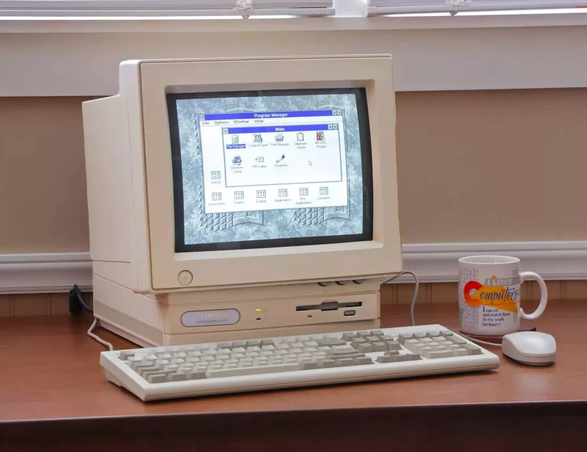Почти каждое периферийное устройство было выполнено из одинакового пластика одного цвета. Некоторые производители осмелились отклониться и предложить что-то другое по внешнему виду, например, некоторые модели из линейки Compaq Presario. Хотя они по-прежнему соответствовали преобладающему бежевому стандарту той эпохи, их корпуса, по крайней мере, были более рельефными.
Если быть справедливым по отношению к производителям прежних моделей, то мало кто ожидал, что форма ПК будет отличаться от той, что была задана IBM в 1980-х годах. Устройства, которые можно было добавить к компьютеру, тоже были ограничены в своей форме, поскольку дисководы для дискет и компакт-дисков были обязательными элементами любой машины, и они должны были соответствовать стандартному формату.
Хотя некоторые из этих ограничений сохраняются и сегодня, огромное количество доступных форматов ПК показывает, как много изменилось. Черный цвет стал предпочтительным для большинства электронных устройств, прежде всего, по эстетическим соображениям (он лучше бежевого скрывает грязь и другие следы), хотя популярность белого, серебристого и других более мягких пастельных тонов растет.
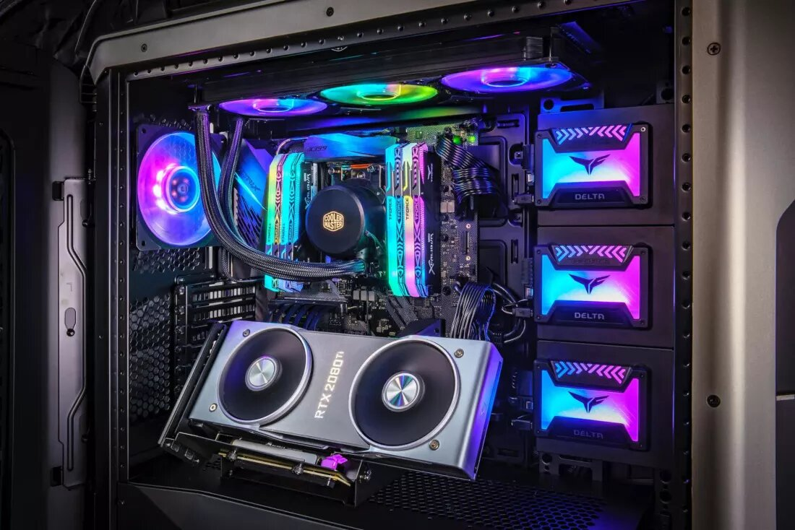Но именно размер и форма ПК изменились самым кардинальным образом - от изящных, незаметных систем малого форм-фактора (SFF) до гаргантюанских бегемотов, теперь нет ограничений в том, насколько маленьким или большим может быть домашний компьютер. Производители корпусов для ПК в прошлом превозносили способность своих продуктов вмещать как можно больше 5,25- или 3,25-дюймовых устройств; теперь же речь идет скорее о количестве вентиляторов/охлаждения, малой занимаемой площади или бесшумности.
И хотя внешне современные компьютеры обычно однотонны, использование светодиодной подсветки для создания внутренних цветов и узоров теперь является стандартной функцией любого ПК с ярлыком "игровой". Конечно, офисные машины и рабочие станции обходятся без подобных фривольностей и внешне не слишком отличаются от своих собратьев из 90-х, но редко какая модель оснащена, например, DVD-приводом.
Как же произошла эта трансформация? Некоторые утверждают, что изменения произошли благодаря компании Apple, выпустившей первый iMac в 1998 году. В конечном итоге его популярность с полупрозрачным разноцветным корпусом показала, что потребители восприимчивы к такому дизайну, и хотя мир IBM PC-совместимых машин включил в себя некоторые элементы, фундаментальная компоновка по-прежнему сильно напоминала классический дизайн.
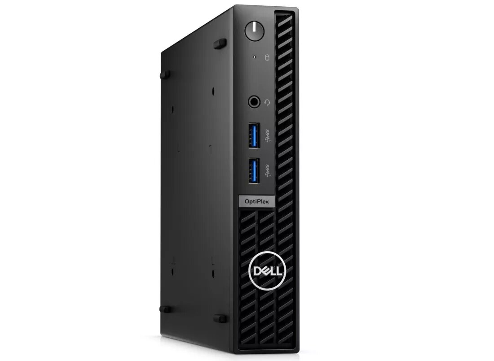Не существует какой-то одной конкретной причины для всех этих изменений, но по мере того, как ПК становились все более дешевыми и удобными в использовании, открывались новые рынки, чтобы извлечь выгоду из компьютерной эпохи. Повсеместное распространение RGB-вентиляторов и корпусов со стеклянными панелями можно напрямую отнести на счет энтузиастов ПК, которые хотели еще больше персонализировать свои системы.
Производители аппаратного обеспечения следовали тенденциям на форумах и адаптировали свои продукты для более простых и чистых сборок - шаткие, дешевые на вид ПК с нагромождением проводов внутри уступили место прочным металлическим и стеклянным панелям, демонстрирующим компоненты со скрытыми от глаз соединениями.
Компьютеры SFF в немалой степени обязаны таким моделям, как Apple Mac Mini, Intel формата NUC и Raspberry Pi - или наоборот? - Сегодня можно получить домашний медиасервер размером не больше увесистого романа и с внешним видом, который не посрамит ни один взыскательный книжный шкаф.
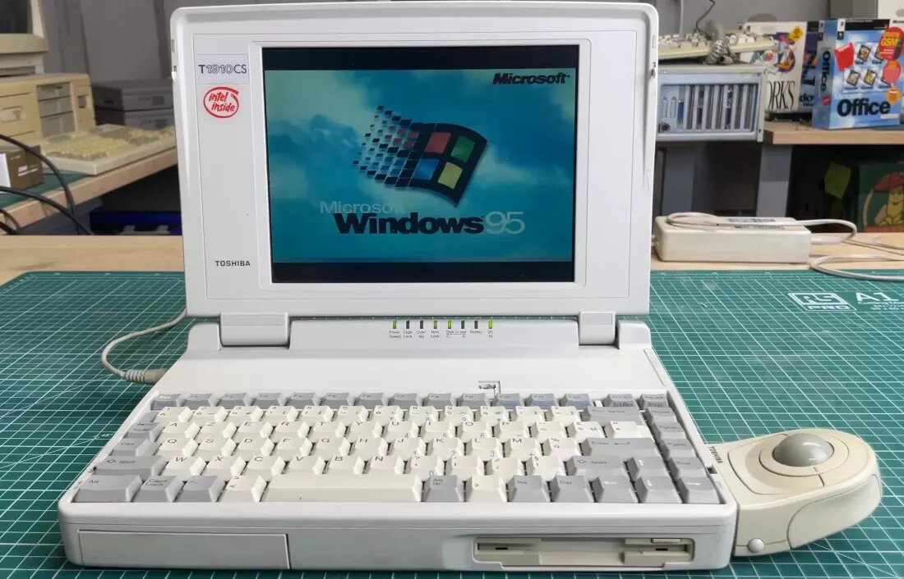Ноутбуки по-прежнему имеют очевидную связь с прошлым. Значительный прогресс в качестве сборки, технологиях производства экранов и батарей, а также развитие флэш-памяти NAND для хранения данных, к счастью, сделали их более прочными и приятными в использовании, но их форма остается практически неизменной. Даже так называемые устройства "2-в-1", появившиеся благодаря популярности планшетов (во главе с iPad от Apple), по своей сути остаются ноутбуками.
Это не значит, что все стало лучше. Неустанное стремление сохранить свои позиции на рынке привело к тому, что ноутбуки стали, пожалуй, слишком тонкими и легкими, что ограничивает количество проводных подключений. То же самое справедливо и для настольных ПК - те из них, которые хоть сколько-нибудь заслуживают доверия в игровом мире, обычно оснащаются визуальными функциями, которые не способствуют повышению производительности и только увеличивают цену.
Но, по крайней мере, нельзя критиковать бесчисленное множество вариантов, охватывающих все возможные варианты использования и конфигурации, которые доступны нам сейчас.
Безгарничная фантазия
При наличии соответствующих ноу-хау вы можете использовать ПК для проведения глубоких исследований, создания сложных документов для публикации, управления и обработки сложных массивов данных, создания музыки, видео и трехмерной графики. Конечно, многие люди потребляют на своих устройствах только некоторые из этих материалов, а многомиллиардные индустрии существуют исключительно ради компьютерных удовольствий.
Но если пролистать типичный компьютерный журнал начала 90-х годов, то можно заметить несколько иную историю - все в основном ориентировано на "производительность" и лишь мимолетно кивает на развлечения.
Это не значит, что домашние компьютеры не использовались для развлечений; действительно, существовала процветающая индустрия компьютерных игр. Однако больше внимания уделялось консолям, поскольку совокупные продажи SNES от Nintendo и Sega Genesis значительно превышали весь рынок ПК.
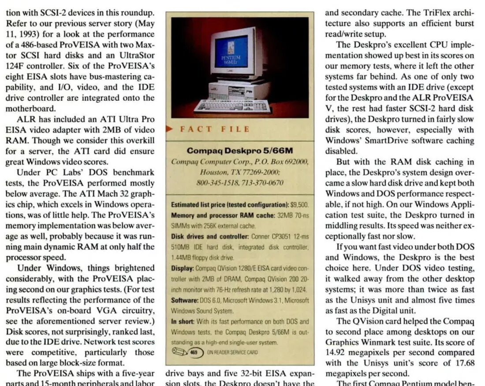Раньше персональные компьютеры были невероятно дорогими, особенно это касалось моделей высокого класса. В 1993 году, если вы работали в области графического дизайна и хотели иметь машину, оснащенную новым процессором Pentium от Intel, 32 МБ оперативной памяти, 500 МБ дисковой памяти, видеокартой с 2 МБ памяти и 20-дюймовым монитором с высоким разрешением, вам пришлось бы выложить за нее более 9000 долларов.
Конечно, сейчас вы можете потратить такие деньги, но тогда средний доход семьи в США составлял около 30 000 долларов - другими словами, домашний пользователь должен был потратить на этот компьютер примерно треть своего годового дохода. Для того времени эти характеристики были самыми высокими, но сегодня то же самое можно сделать всего за половину той же суммы, а средний доход с начала 1990-х годов вырос более чем в два раза.
Более того, сейчас для выполнения любой задачи вам не нужно самое лучшее оборудование. Даже очень сложные рабочие нагрузки, такие как обработка искусственного интеллекта и рендеринг графики, могут быть выполнены на стандартных компонентах в рамках разумного бюджета. Да, системе потребуется больше времени, чтобы выполнить эту работу, но она сможет это сделать; специализированное оборудование 90-х годов сейчас является обычным для всех ПК.
Хотите создать свой собственный фильм/игру "История игрушек" или "Mario Bros"? Если у вас есть талант и вы не против подождать несколько часов, пока закончатся задания, то даже бюджетного ПК будет достаточно.
Дело не только в творческих возможностях, которые предлагают нам домашние компьютеры - мы можем легко работать и играть вместе, причем в режиме реального времени, когда десятки людей беспрепятственно подключаются к одной и той же задаче или игре. В этом большая заслуга дешевого высокоскоростного Интернета, а также достижений в технологиях экранов и камер.
Connectix QuickCam, одна из самых первых веб-камер потребительского класса, дебютировала в 1994 году, но при этом позволяла снимать только в градациях серого цвета 320 x 240 с частотой 15 кадров в секунду. Первоначально она была доступна только для компьютеров Apple Mac и продавалась по цене 100 долларов - это 210 долларов в сегодняшних деньгах. Но сегодня за сумму, примерно в три раза превышающую эту, вы можете получить целый компьютер, обернутый вокруг веб-камеры, которая является полноцветной и производит видео с 12-кратным увеличением числа пикселей, с удвоенной частотой кадров.
При наличии соответствующего оборудования изображения и видео могут быть записаны или переданы в прямом эфире в любой точке мира.
Любой человек дома может взять эти данные, отредактировать и улучшить их, создавая новые медиа для образования и развлечений. Времена, когда для этого требовались чрезвычайно дорогие компьютеры и специальные, передовые знания, давно прошли
Возможности современного ПК и связанных с ним периферийных устройств, ставшие доступными благодаря неустанному совершенствованию программного обеспечения, сделали все это возможным.
Настоящее и будущее компьютеров
Как это было всегда, предсказание будущей конфигурации типичного ПК - даже на несколько лет вперед, не говоря уже о еще 30 - остается сложным и потенциально непредсказуемым занятием. Многие базовые аспекты остались неизменными с трех десятилетий назад, например, процессоры на базе архитектуры x64, а также базовый набор оперативной памяти, накопителей, графических адаптеров и возможностей подключения.
Будущие машины, вероятно, будут придерживаться этой простой структуры, но базовые конструкции различных компонентов, скорее всего, будут существенно отличаться.
Возможно, мы станем свидетелями постепенного отказа от проводов, за исключением кабеля питания, подключенного к задней панели компьютера (беспроводное питание компьютера мощностью 700 Вт было бы не слишком идеальным!) В настоящее время провода необходимы для подачи тока к внутренним деталям и передачи данных на некоторые устройства. Однако их можно заменить стандартизированными разъемами, выполняющими обе функции.
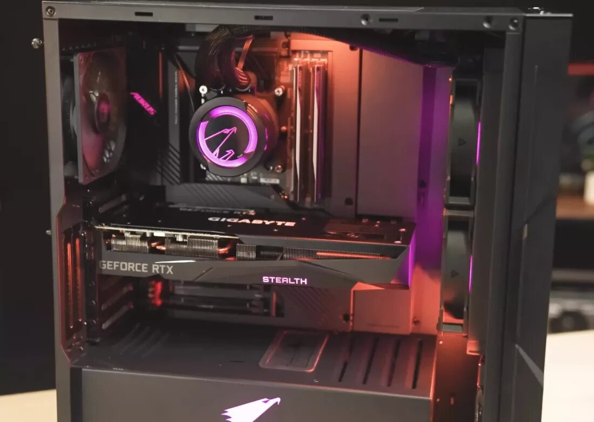Мы уже имеем это сейчас - слоты PCI Express и M.2 используются для видеокарт и жестких дисков, и хотя для питания первых по-прежнему требуются мощные кабели, некоторые производители уже пытаются минимизировать количество необходимых кабелей, и ничто не говорит о том, что в конечном итоге все это не будет встроено в материнскую плату.
Насколько более мощными будут ПК 2053 года, можно только гадать. Мы начинаем приближаться к пределам того, чего могут достичь полупроводниковые технологические узлы при крупномасштабном производстве процессоров. Однако пройдет еще немало времени, прежде чем мы упремся в непреодолимую стену. Возможно, настольный процессор будущего не будет работать на частоте 50 ГГц или обрабатывать тысячи потоков за цикл, но он должен более чем успешно справляться с ожидающими его рабочими нагрузками.
Компьютеры уже выпускаются всех мыслимых размеров, форм и форматов, поэтому предсказать возможные различия в этом отношении довольно сложно. Возможно, мы увидим повышенное внимание к переработке и повторному использованию различных деталей в связи с нынешним тревожным количеством электронных отходов.
То же самое можно сказать и о тенденции энергопотребления. Высокотехнологичные процессоры потребляют в 10-20 раз больше энергии, чем процессоры 90-х годов, а самые большие видеокарты в домашних ПК - в 100 раз больше. Наша забота об окружающей среде может диктовать дизайн будущего ПК больше, чем потребности использования или технологический прогресс.
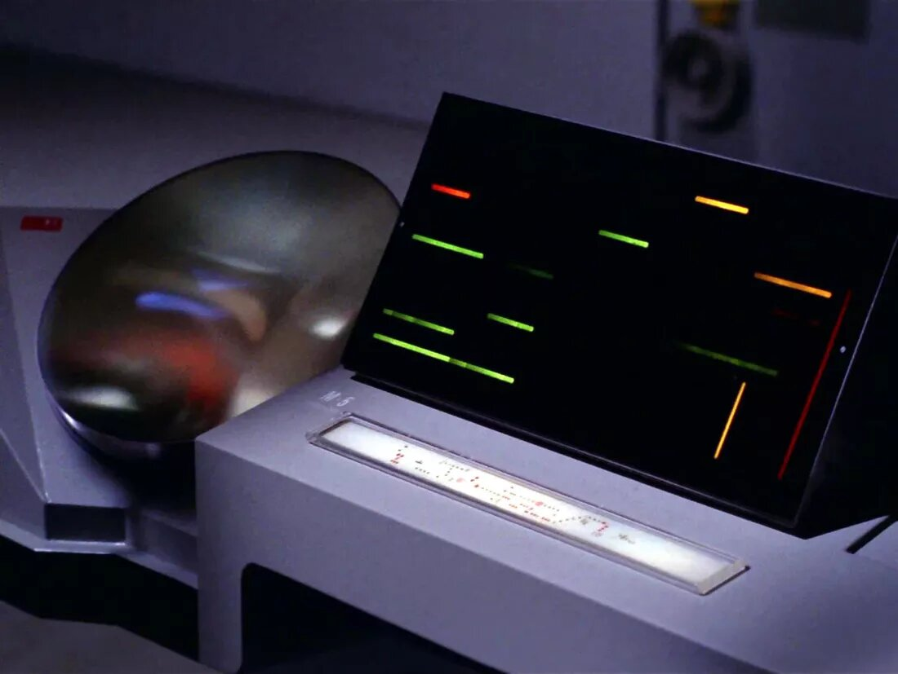За последние 30 лет мы стали свидетелями необычайной эволюции персонального компьютера. Эти машины произвели революцию в том, как мы живем, работаем, развлекаемся, общаемся с друзьями и близкими. Когда-то неуклюжие, непривлекательные и громоздкие машины превратились в изящные, мощные устройства, столь же потрясающие, сколь и способные.